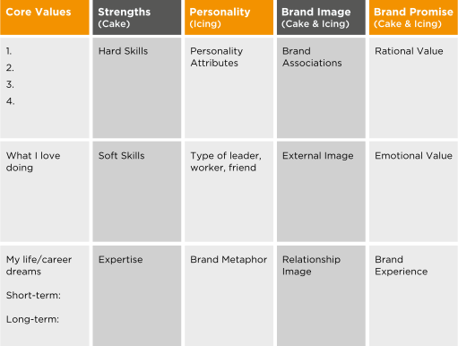
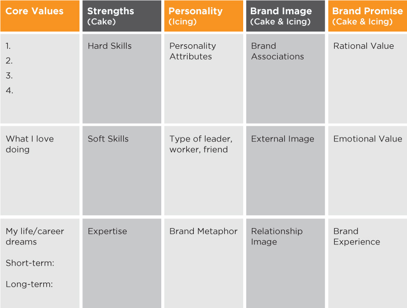
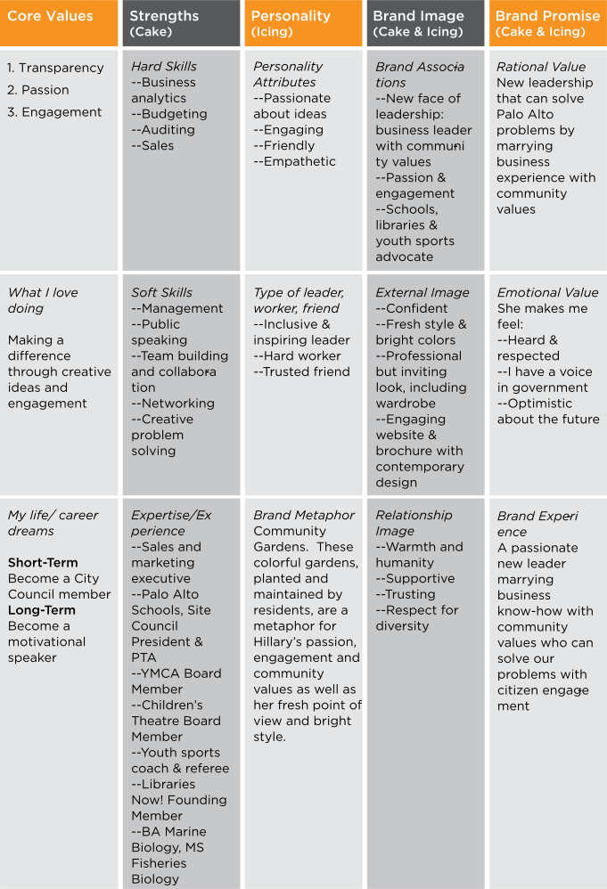
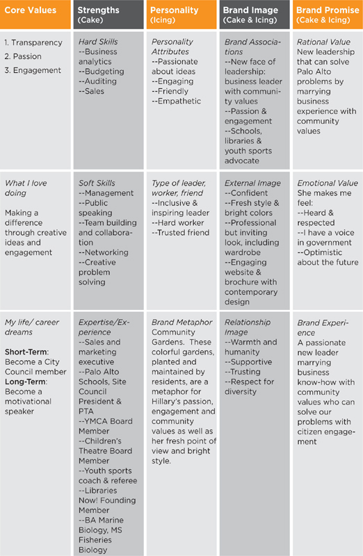

Brand Strategy Platform
 
To access PDF version, go to www.brandingpays.com/resources
The brand strategy platform represents our methodology in template form. Think of it as a worksheet to help you to understand who you are and what your brand stands for. The brand strategy platform augments the positioning statement (chapter 2) by incorporating your icing. Few people think strategically about the emotional value that their brand delivers, and fewer still can articulate what it is. The brand strategy platform provides the vehicle to help you to put into words the essence and value of your brand.
Let’s take a section-by-section look at the brand strategy platform to help you understand how to use it. I’ll use Hillary Freeman as an example throughout each section to model how it is done. Other examples of brand strategy platforms will be included at the end of this chapter.
Core values should drive the behaviors you engage in and the decisions that you make.
We’ve added areas to help you explore what you love doing and your dreams in career and life—both goals that should be driven by core values. You may be surprised by what you discover when filling out the core values column.
Figure 4.3
| Core Values |
|
| What I love doing Making a difference through creative ideas and engagement |
| My life/career dreams Short-Term: Become a City Council member Long-Term: Become a motivational speaker |
What are the core values that drive who you are and what you are all about? Core values help you to have meaning in what you do and to “do the right thing” in your business, career, relationships and life. Try to narrow the list to just a handful of items. For instance, trust, transparency, honesty and integrity express similar values, so in the interest of brevity, pick one of these rather than including all of them. If necessary, you can develop a backup document that expounds on what you mean by that one word.
Hillary’s Core Values:
Hillary’s core values were true to her person as well as being meaningful to the electorate, which was hungry for passionate leaders who engaged well with the public in an open and democratic process.
Figuring out what you love doing is important. If you love doing a certain job or activity, then you’ll have a passion for it. You’ll have more energy and creativity—you’ll do your best work. Your passion and enthusiasm will come across in your personality, making you more attractive and engaging.
Sometimes when filling out this box, there can be a big “Aha!” moment when you discover that what you love doing and what you are currently doing are not in sync. This one section caused a personal branding client of mine to move from marketing to a lateral job in another area that better leveraged her interest and degree in science.
It is not always practical to drop your career and become, for example, a jazz musician. Perhaps you can find some of the things that you love about jazz (such as improvisation, creativity and teamwork) and find opportunities to do more of this in your current job or in an adjacent career path.
What Hillary Loves Doing:
Making a difference through creative ideas and engagement
It’s clear that her goal of becoming a City Council member aligns with her love of making a difference by leveraging creative thought and engaging with the public. Does your job or career align with what you love doing?
Few of us take the time to think about what we want out of our lives or our careers. Here’s your chance. Envision yourself engaged in what you’d like to be doing in 10 or 20 years. Then, imagine looking back and seeing what steps or paths you took to get there.
Try writing down a short-term career goal, and then a longer-term career or life goal. You can develop a brand strategy for today’s career goal, but keep your longer-term goal in mind as your brand changes throughout the years.
Hillary’s Life or Career Dreams:
Hillary has since left the world of high-tech sales to follow her passion for making a difference with young people. She leveraged her science degrees to become a middle-school science teacher and a Google Education Fellow. She has expanded the horizons of her students with educational trips to China, Japan, Spain and Trinidad. Hillary has co-authored a book on conflict resolution that brands her as an expert. She is a speaker and trainer at national conferences. Clearly, she is setting the foundation to realize her long-term goal.
Figure 4.4
| Strengths (Cake) |
| Hard Skills --Business analytics --Budgeting --Auditing --Sales |
| Soft Skills --Management --Public speaking --Team building and collaboration --Networking --Creative problem solving |
| Expertise/Experience --Sales and marketing executive --Palo Alto Schools, Site Council President & PTA --YMCA Board Member --Children’s Theatre Board Member --Youth sports coach & referee --Libraries Now! Founding Member --BA Marine Biology, MS Fisheries Biology |
The Strengths section helps you to articulate both the hard and soft skills as well as the expertise that make up your strengths. The Strengths column represents your cake, or rational value. Look at your positioning statement (chapter 2) to understand the strengths that should evidence your positioning claim.
As you inventory your strengths, also identify key weaknesses that may hinder your progress toward your desired brand. These weaknesses can be addressed in your action plan (chapter 6). We have chosen not to include a box for weaknesses, as our focus is on keeping this exercise positive.
Hard skills are something you were specifically trained to do, such as software programming, speaking a foreign language, market research or financial analysis. Hard skills use your Intelligence Quotient (IQ).
Hillary’s Hard Skills:
Hillary’s hard skills helped her to be credible when she campaigned as a candidate with business experience who knew how to budget, analyze and conduct audits.
Are the skills required for you to achieve your career or business goals in your Strengths column? If not, then add them to Strengths in your desired brand with an asterisk for action (we’ll address building needed skills in your action plan in chapter 6).
Soft skills can be thought of as people skills. Don’t get hung up on what are hard skills versus soft skills. The important thing is to list all of your strength attributes—both the obvious and the less obvious, or less tangible. You can edit the list later.
Soft skills rely more on your Emotional Quotient (EQ). Soft skills can include such skills as communicating, conflict management, human relations, making presentations, negotiating, team building, leadership skills, management skills, networking, collaboration and demonstrating empathy.
Hillary’s Soft Skills:
All of Hillary’s soft skills were necessary to be an effective member of the City Council. She was able to message and demonstrate all of them through campaign events and her volunteer activities.
In the professional world, being an expert in a domain area is important. Generalists without special skills, knowledge or experience are often seen as commodities that are expendable. If you don’t have an area of expertise, it is important to develop one. For instance, it can be a technical area, a market area or an area in which you provide thought leadership, such as managing diversity. Maybe you need to dust off an old educational degree to show evidence of your expertise. Remember Marnie from chapter 2? She is the retail professional turned elder care sales specialist who emphasized her psychology and counseling degrees to build credibility for her career change.
Hillary’s Expertise and Experience:
Hillary had an excellent background in business and community, providing evidence for her brand positioning.
The Personality column is all about icing, your emotional value or how people connect with you. For some technical jobs where the focus is heavily on your cake, or rational value, personality may be less important. But if you are personable, you will always have a leg up over someone with little personality or a negative personality.
The Personality column should be about likability. When was the last time you went the extra mile to help someone you did not like? Exactly. Do people think of you as someone who they would want to lead their team, go out for drinks with or work on their project? What are those attributes that attract people to you and make them like you? When people like you, they feel an emotional connection. They will be more willing to help you or advocate for you.
I know people who exude a calm confidence and empathy that make their quiet personalities desirable.
Some of your core values or soft skills (from your Strengths section) may also appear in your Personality column, such as being collaborative, honest and empathetic. It makes sense for certain values or EQ attributes to appear as a theme in several columns. That just means that these attributes are a strong part of your brand that you evidence in many ways.
Figure 4.5
| Personality (Icing) |
| Personality Attributes --Passionate about ideas --Engaging --Friendly --Empathetic |
| Type of leader, worker, friend --Inclusive & inspiring leader --Hard worker --Trusted friend |
| Brand Metaphor Community Gardens. These colorful gardens, planted and maintained by residents, are a metaphor for Hillary’s passion, engagement and community values as well as her fresh point of view and bright style. |
Personalities come in all flavors: passionate, cerebral, hard-edged, quiet, extroverted, witty or dull (hopefully, you are not the latter). Refer back to your goal. What kind of personality is more likely to achieve this goal? If you are looking for your first job and you lack confidence, companies won’t want to hire you. If you are a sales manager and act like a loner, you will be less likely to reach your goal of sales executive, someone who needs to build and inspire a team. If you are an entrepreneur without passion for your ideas, you will be less likely to inspire someone to invest in your company or buy your products.
Hillary’s Personality Attributes:
Hillary’s personality is perfectly aligned with her core values, strengths (soft skills) and positioning.
The focus here is how you show up as a leader, a worker or a friend in terms of personality. Are you inspiring, supportive, trustworthy, direct and caring? Some of your answers may be included as soft skills under Strengths, but repeating them here is fine. If you want to be an executive, you’ll want to focus on your leadership personality. If you are an individual contributor, your focus should be both on your worker and leadership personality, since all professionals should have leadership attributes.
Hillary’s Type of Leader, Worker and Friend:
We would not expect anything less of the Hillary Freeman brand, given what we know about her core values and how she is positioned.
The brand metaphor can help to free you in how you think about your brand. For instance, finding a celebrity, retail store or car brand that personifies your brand can help you to be clear about your brand type. If a luxury hotel is your brand metaphor, you’ll know that the highest-quality service and customer experience is key to what you are about. Your behaviors and communication should reflect these values.
Be creative when thinking about your brand metaphor. You can use any animate or inanimate thing as your metaphor. People have chosen kitchen appliances, museums, points of interest, animals and fashion brands. You can make it fun by polling your friends or colleagues about what metaphor they would use to represent your brand.
At the time, we didn’t have a brand metaphor for Hillary, but if I had to choose one today, I would say:
Community Gardens. These colorful gardens, planted and maintained by residents, are a metaphor for Hillary’s passion for engagement and community values as well as her fresh point of view and bright style.
The Brand Image section includes your brand associations, visual branding and relationship branding.
Figure 4.6
| Brand Image (Cake and Icing) |
| Brand Associations --New face of leadership: business leader with community values --Passion & engagement --Schools, libraries & youth sports advocate |
| External Image --Confident --Fresh style & bright colors --Professional but inviting look, including wardrobe --Engaging website & brochure with contemporary design |
| Relationship Image --Warmth and humanity --Supportive --Trusting --Respect for diversity |
You want people to associate you with your profession and unique positioning. Your branding has failed if all they remember is how you dress, not what you do or what value you provide.
For this template, focus your brand associations primarily on your cake, or positioning (see your positioning statement in chapter 2). Include bullet points for your positioning category and differentiating value. You’ll have plenty of opportunity in the next boxes to add the icing.
Hillary Brand Associations:
These are the brand associations that we wanted associated with Hillary the candidate.
Your external image should include what you look like, your presence and your visual branding.
Hillary’s External Image:
Hillary’s strategy for her external image reinforced her positioning messages about being the new face of leadership. Think about what messages your external image sends. If these messages are not consistent with your goal, consider changing your external brand strategy.
Are you seen as a supportive manager, a good partner and a trusted friend? How you treat others in a relationship demonstrates your values.
Hillary’s Relationship Image:
Hillary’s ability to build warm, genuine relationships was an important part of her brand. She was a welcome contrast to many of the council candidates who had a more difficult time developing authentic and engaging relationships. She was definitely someone whom you would enjoy having coffee with and getting to know.
Core values, strengths, personality and brand image should deliver on your brand promise. When people choose your brand, they should get what has been advertised. To deliver anything less breaks your brand promise to your customer or target audience.
Figure 4.7
| Brand Promise (Cake and Icing) |
| Rational Value New leadership that can solve Palo Alto problems by marrying business experience with community values |
| Emotional Value She makes me feel: --Heard & respected --I have a voice in government --Optimistic about the future |
| Brand Experience A passionate new leader marrying business know-how with community values who can solve our problems with citizen engagement |
Rational value consists of what others should expect from your cake—that is, your functional value.
Hillary’s Rational Brand Value:
New leadership that can solve Palo Alto problems by marrying business experience with community values
In Hillary’s brand strategy platform, the recurring themes of new leadership and marrying business and community experience are woven throughout. Don’t be afraid to sound like a broken record in your platform; if you see words or themes repeated, it means you are in alignment on many levels.
Emotional value is how people should feel when they engage with your brand. Using “I feel…” statements from your stakeholders’ viewpoint can help you to understand what emotional value they might feel in working with you or relating to you. Do they feel relief, empowerment, secure that things will be done well, enjoyment or respect?
Hillary’s Emotional Brand Value:
She makes me feel:
Having an emotional connection is key. This connection is what breeds brand loyalty. Does drinking coffee with friends at Starbucks, for instance, make you feel warm and cozy? This emotional association with the brand makes you want to return. For Hillary, making people feel heard and optimistic was key to her emotional brand value.
The brand experience is the overall experience that we want to deliver when others come into contact with our brand. The brand experience must deliver on your overall brand promise—both the rational value and the emotional value. Try to crystallize the experience in a short phrase that teams the essence of your cake (positioning) with key icing deliverables.
Hillary’s Brand Experience:
A passionate new leader marrying business know-how with community values who can solve our problems with citizen engagement.
Hillary’s brand experience goal meant that she had to:
Hillary had the right core values and strategy to drive her behavior and campaign actions to deliver on this brand experience. With the right brand strategy and consistently delivering on her brand experience, Hillary went from political unknown to the top vote-getter in her election.
Figure 4.8
Hillary Freeman Brand Strategy Platform
 